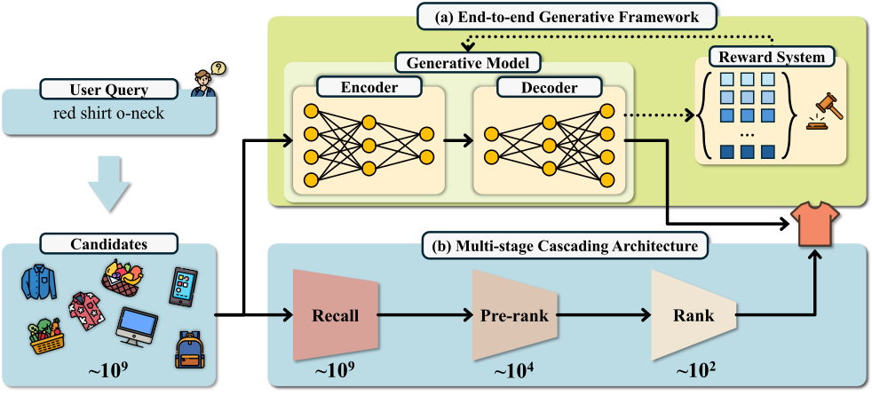
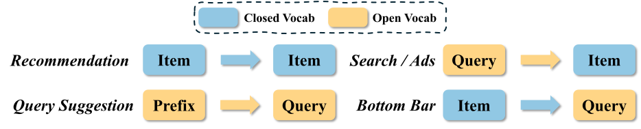
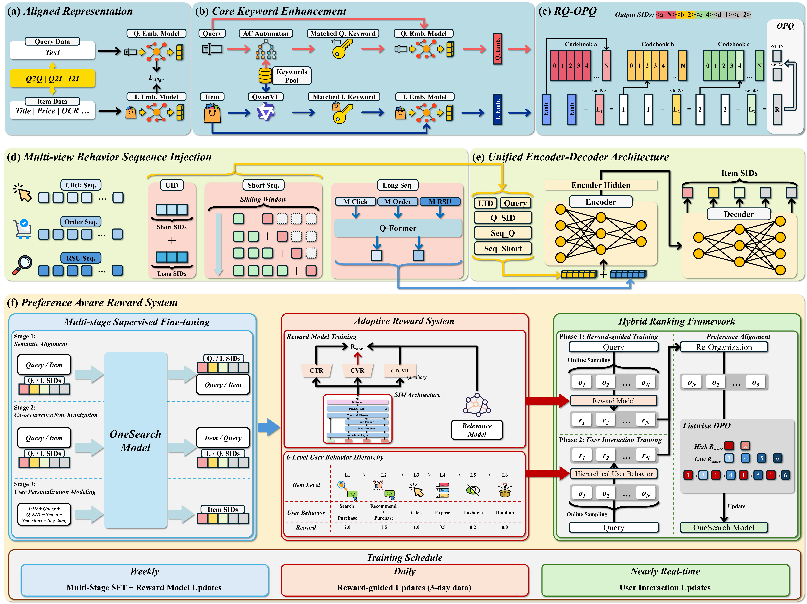
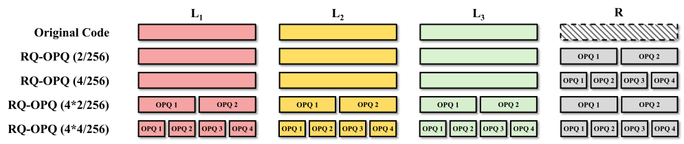
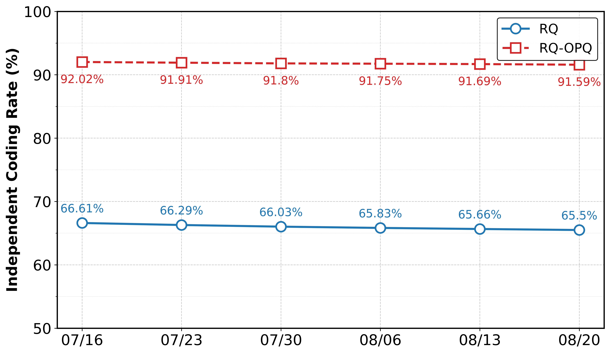
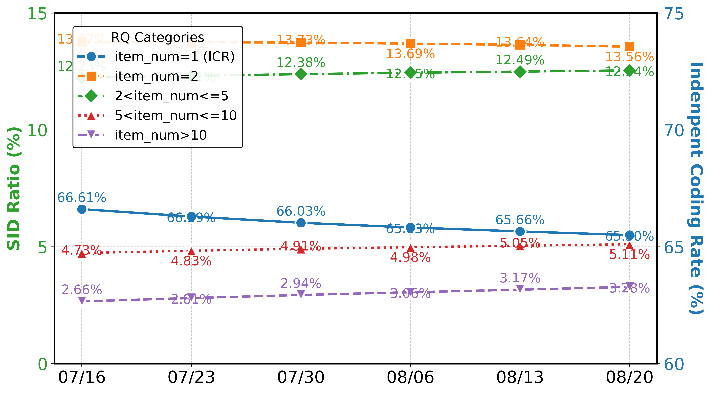

OneSearch：面向电商搜索的统一端到端生成式框架的初步探索
摘要
传统电商搜索系统采用多阶段级联架构（MCA），通过召回、粗排和精排阶段逐步筛选商品。这类系统虽在平衡计算效率与商业转化方面行之有效，却存在计算碎片化以及跨阶段优化目标冲突的问题，最终限制了其性能上限。为解决上述问题，我们提出OneSearch，这是首个在工业界部署的电商搜索端到端生成式框架。该框架引入三项关键创新：（1）关键词增强的层次量化编码（KHQE）模块，在保持强查询-商品相关性约束的同时，既保留层次语义又保留商品的特有属性；（2）多视角用户行为序列注入策略，构造行为驱动的用户ID，并同时纳入显式短期序列与隐式长期序列，以全面建模用户偏好；（3）偏好感知奖励系统（PARS），包含多阶段监督微调与自适应奖励加权排序，以捕捉细粒度用户偏好。在大规模工业数据集上的大量离线评估表明，OneSearch在高品质召回与排序方面表现优异。严格的在线A/B测试证实，其能够在相同曝光位下提升相关性，并取得统计显著的提升：商品CTR提升+1.67%、买家数提升+2.40%、订单量提升+3.22%。此外，OneSearch将运营开销降低75.40%，并将模型FLOPs利用率从3.26%提升至27.32%。该系统已在快手多个搜索场景中成功部署，服务数百万用户，日均产生数千万PV。

1. 引言
电商搜索旨在根据用户的搜索词、行为偏好和现有商品库存，检索与用户真实意图相符的商品。为提升用户体验，这类系统通常需要在一秒内从数亿候选中识别出同时满足语义与个性化标准的商品。因此，传统搜索系统常采用多阶段级联架构（MCA）。如图1(b)所示，MCA遵循由粗到细的范式，查询依次经过召回、粗排和精排阶段，最终返回精选商品。召回阶段作用于全部商品候选集（约），粗排阶段缩小选择范围（约），最终的精排阶段仅评估排名靠前的候选（约）。
MCA通过在各阶段逐步缩小商品池，有效平衡了系统响应时间与排序准确性之间的权衡。然而，MCA本身存在严重的计算碎片化与目标冲突问题(Dubey et al., 2024a; Deng et al., 2025; Wei et al., 2025)。计算碎片化意味着大部分服务资源被分配给通信与存储，而非数值计算。就目标冲突而言，MCA可能采用多种策略以满足准确性与多样性要求。例如，召回和粗排阶段使用轻量模型，倾向于召回所有相关商品，而精排阶段则通过引入用户历史序列、查询与商品统计特征，对用户偏好进行复杂推理。多层漏斗过滤可能丢弃符合意图的商品，加之优化目标异质，降低了搜索系统的性能上限。此外，传统MCA缺乏对冷启动查询和商品的理解，导致其在长尾会话中表现受限(Bao et al., 2025; Guo et al., 2025)。
近年来，已有大量工作致力于解决上述问题。一些工作聚焦于阶段内优化，例如用于召回的EBR(Huang et al., 2020)、用于粗排的DCN(Wang et al., 2021)和DSSM(Huang et al., 2013)，以及用于最终精排阶段的DIN(Zhou et al., 2018)和DeepFM(Guo et al., 2017)。尤其是随着大语言模型（LLM）的进展，已有相当一部分研究涌现出来，旨在利用生成模型应对各个阶段的挑战(Liang et al., 2025; Chen et al., 2024; Li et al., 2024a; Zhai et al., 2024; Zhu et al., 2025)。另一类工作聚焦于解决全阶段目标不一致的问题(Zhang et al., 2023, 2025; Evnine et al., 2024)，力图通过样本构造与损失设计确保意图商品的有效传递。然而，这些方法仍难以克服MCA的固有局限。例如，（粗）精排阶段只能处理上一阶段召回的top-k商品。如果符合用户真实意图的有效商品在较早阶段被过滤掉，那么无论后续模型多么精确，都无法将该商品呈现给用户。
过去两年间，一种新颖的生成式检索（GR）范式已经出现，它将MCA基于匹配的基础框架转变为基于生成的方法，从而应对其固有局限(Rajput et al., 2023; Zheng et al., 2024; Pang et al., 2025; Deng et al., 2025; Guo et al., 2025; Zheng et al., 2025; Wei et al., 2025)。该范式无需多阶段过滤，而是直接输入查询或用户序列信息，输出相应的商品候选。Tiger(Rajput et al., 2023)率先为序列推荐开发了端到端生成式检索模型，引入了由各商品内容信息导出的语义ID（SID），以实现高效的商品表示。LC-REC(Zheng et al., 2024)提出通过整合用于推荐的协同语义来适配LLM，并利用一系列专门设计的调优任务。随后，OneRec(Deng et al., 2025)首次在真实工业场景中落地，其后又有用于电商搜索查询建议的OneSug(Guo et al., 2025)、用于广告的EGA(Zheng et al., 2025)以及用于本地生活服务的OneLoc(Wei et al., 2025)。
然而对于电商搜索而言，由于若干独特且关键的挑战，这些方法并不那么有效： 1）商品信息（如标题、关键词和详情页）往往冗长且含有冗余的无关噪声，因为卖家常常添加无关关键词以增加曝光。此外，商品描述中的语义顺序较弱。品牌名、属性词和类目等关键信息在文本中出现时往往不讲究位置(Li et al., 2024a)。这种缺乏全局连贯性的情况会严重误导表示模型，导致错误判断。2）与推荐不同，搜索查询与商品之间存在强相关性约束。查询通常由2-3个短关键词组成，任何属性上的不匹配都可能导致严重的相关性问题。尽管基于语义ID的GR模型能够构建商品的分层、可学习表示，但它们不可避免地导致核心属性表示的丢失，因为它们倾向于学习相同SID下的共享信息。3）揭示用户的潜在搜索意图也是一项核心挑战。当用户输入简短的查询或搜索一个全新的类目时，如何有效地将查询内容与用户行为画像相结合以推断用户真实的搜索意图至关重要。
为应对这些挑战，我们提出OneSearch，一个面向电商搜索的端到端生成式框架，其中包括：
1）关键词增强的层次量化编码模块。KHQE采用关键词增强的语义协同编码器来突出商品的核心属性。随后使用RQ-Kmeans进行层次特征编码，并使用OPQ对每个商品的独有特征进行量化。该编码有效降低了冗余无关噪声的干扰，从而增强了查询与所生成商品之间的相关性。
2）多视角用户行为序列（Mu-Seq）注入策略。该策略将加权衰减的点击行为序列引入用户ID以构建独特的用户表示，随后在提示中显式纳入短期行为序列以学习用户近期偏好，并隐式包含长期行为序列以建模用户画像，从而实现对用户个性化行为的多视角建模。
3）偏好感知奖励系统（PARS）。我们设计了一个用于语义对齐与个性化的多阶段监督微调过程，随后是一个利用层次化用户行为信号与列表级偏好优化的自适应奖励系统。该系统使模型能够学习商品间的偏好差异，同时通过将奖励模型引导与直接用户交互反馈相结合的混合排序来维持查询-商品相关性约束。
我们在真实用户搜索日志上进行了大量离线评估，显著的性能提升证明了OneSearch对电商搜索的有效性。我们还在快手商城搜索平台上进行了多次严格的A/B测试，以验证其在线有效性。纯OneSearch即可取得与在线MCA相当的性能。通过引入RQ-OPQ和长期行为序列，OneSearch能够有把握地将商品CTR提升1.45%、PV CTR提升1.40%。而应用额外的奖励模型选择后，可带来搜索PV提升1.10%、商品CTR提升1.67%、PV CTR提升3.14%、PV CVR提升1.78%、买家数提升2.40%、订单量提升3.22%。另外补充一点，我们还进行了一次仅包含召回、粗排阶段的MCA测试，结果商品CTR下降9.97%、订单量下降39.14%。这些结果有效展示了OneSearch的性能。最后，纯OneSearch可节省约75.40%的运营开销，并将模型FLOPs利用率（MFU）从MCA的3.26%提升至27.32%。它已成功部署于详情页搜索的全量流量、商城搜索的50%流量以及首页搜索平台的20%流量，以供进一步研究。据我们所知，这是首个在工业界部署的电商搜索端到端生成式框架。我们希望这一探索能够进一步为搜索中更智能的GR铺平道路。
本工作的主要贡献总结如下：
-
•
我们提出了一种新颖的关键词增强层次量化编码，能够为查询/商品生成在上下文特征与协同信号之间取得平衡的语义ID。关键词增强策略可进一步降低无关噪声的干扰，并强化GR的相关性约束。
-
•
我们设计了一种多视角用户行为序列注入策略，将序列引入用户ID表示，并在输入提示中显式和隐式地引入序列。该方法能够促进GR对用户画像与偏好的推理。
-
•
我们设计了一个偏好感知奖励系统，其中包含多阶段SFT过程以及一个自适应奖励模型，以提升模型的个性化排序能力。
-
•
最后，我们提出了OneSearch，这是首个在工业界部署的电商搜索端到端生成式框架。我们进行了多种离线与在线A/B测试，验证了其在真实电商搜索场景中的有效性与高效性。
2. 相关工作
2.1. 生成式检索与推荐
近年来，生成式检索（GR）因其卓越表现而受到学术界与工业界的广泛关注。这一新兴检索范式将大规模检索视为序列到序列的生成任务，已超越EBR(Huang et al., 2020)和RocketQA(Qu et al., 2021)等传统基于ANN的模型，激起了在搜索与推荐领域更多的探索。该领域的重要贡献包括Tiger(Rajput et al., 2023)、DSI(Tay et al., 2022)和LC-REC(Zheng et al., 2024)。Tiger(Rajput et al., 2023)率先为序列推荐开发了端到端生成式检索模型，引入了由各商品内容信息导出的语义ID（SID），以实现高效的商品表示。LC-REC(Zheng et al., 2024)提出通过整合用于推荐的协同语义来适配大语言模型（LLM），并利用一系列专门设计的调优任务。
大多数 GR 模型仅作为在线系统中的补充召回来源，因此忽视了这些模型固有的丰富语义与强大推理能力在（预）排序阶段的潜在用途。在视频推荐领域，OneRec (Deng et al., 2025) 首次在单一生成式模型内统一了召回、粗排和排序。这一目标借助会话级生成和迭代式偏好对齐得以实现，并在实际在线指标上带来了显著提升。EGA (Zheng et al., 2025) 与传统的多阶段级联架构（MCA）以及现有的生成式检索模型都有显著不同，它引入了一个统一框架，对整个广告流程进行整体建模。UniROM (Qiu et al., 2025) 采用混合特征服务来高效解耦用户特征和广告特征，而 RecFormer (Li et al., 2023) 作为 Transformer 的一种变体，能够同时捕捉序列内和跨序列的交互。

2.2. 面向搜索的生成式检索
近两年来，生成式检索的大部分进展都集中在推荐领域。这是因为搜索系统面临三大挑战：1）物品信息多且密度低，2）搜索查询与物品之间存在强相关性约束，3）用户潜在搜索意图的推理障碍。因此，当前传统的电商搜索系统仍采用多阶段级联架构。不过，已有一些工作尝试利用生成式检索（GR）来优化现有搜索系统。
第一个例子是 GenR-PO (Li et al., 2024b)，它利用多跨度标识符来表示原始物品标题。该方法将“由查询生成标题”的任务转化为“由查询生成多跨度标识符”的任务，从而简化了生成过程。随后，采用一种受限搜索方法识别关键跨度以检索最终物品，这已被证明对在线召回系统有益。另一个值得注意的例子是生成式检索与对齐模型（GRAM）(Pang et al., 2025)，它对查询和商品双方的文本信息进行联合训练，以生成共享的文本标识符编码。GRAM 采用协同对齐策略来优化这些编码，以最大化检索效率，并已部署在京东搜索引擎上，用于增强召回和粗排阶段。
最近，我们提出了 OneSug (Guo et al., 2025)，它包含一个 prefix2query 表示增强模块，利用语义和交互相关的查询来丰富前缀，从而桥接内容特征与商业特征；一个统一查询建议过程的编码器-解码器生成模型；以及一个带行为级权重的奖励加权排序策略，用于捕捉细粒度的用户偏好。它是首个面向电商查询建议的端到端生成式框架，并已被验证在用户点击和转化方面有显著提升。
这些 GR 方法在搜索、推荐、底部导航、广告乃至查询建议领域都展示出颇具吸引力的性能。但它们并不适用于电商搜索。如图 3 所示，推荐的输入和输出是闭词表物品或视频，因此纯语义 ID 词元化适合其多样化的物品生成。查询建议的输入和输出是完全开放词表的文本描述，因此可以直接使用 Transformer 架构。对于底栏和搜索引擎，其输入或输出中至少有一方是开放词表的，这与 OneRec 和 EGA 都有显著不同。

3. 方法
本节分四个部分详细介绍我们提出的 OneSearch，这是一个面向电商搜索的端到端框架。我们在 § 3.1 中阐述关键词增强的层次量化编码，然后在 § 3.2 中介绍多视角用户行为序列注入策略，并在 § 3.3 中统一编码器-解码器架构。在 § 3.4 中，我们提出偏好感知奖励系统，其中包括多阶段监督微调过程，以及用于个性化排序学习的自适应奖励系统。OneSearch 的框架如图 4 所示。
3.1. 层次量化编码
将物品编码为语义 ID（SID）对于生成式检索模型的成功至关重要。该过程使用由粗到细的量化方法将连续语义表示转换为离散 ID 序列，确保具有相同 SID 的物品共享相同的信息 (Rajput et al., 2023; Deng et al., 2025; Ju et al., 2025a)。然而，常见的量化方法（例如 VQ-VAE (van den Oord et al., 2018)、RQ-VAE (Lee et al., 2022) 或 RQ K-means (Luo et al., 2024)）倾向于使用缩减且固定的词表对物品间的共享信号进行词元化，这会导致每个物品的独特属性丢失。这种信息损失导致许多相似但不相同的物品共享相同的 SID，而较低的码本利用率和独立的编码率也限制了 GR 的性能潜力。
另一些 GR 尝试使用有限标量量化（FSQ）(Mentzer et al., 2023) 或优化乘积量化（OPQ）(Ge et al., 2014) 来尽可能多地词元化有效信息 (Hou et al., 2025)。然而，这些方法无法层次化地表示相似物品之间的核心属性。因此，我们提出结合这两种编码范式。首先，我们利用领域知识提取查询和物品的核心属性，以增强学习到的语义表示和协同表示。然后，我们使用 RQ-Kmeans 进行层次特征编码，并使用 OPQ 量化每个物品的独特特征。这种编码方法有效减少了冗余无关噪声的干扰，从而增强了查询与生成物品之间的相关性。
3.1.1. 对齐后的协同表示与语义表示
我们通过对历史交互查询-物品对的表示进行对齐，将语义知识与协同信号融合起来。首先，我们使用 ItemCF (Sarwar et al., 2001) 和 Swing (Yang et al., 2020) 等现有检索模型，从真实用户搜索日志中筛选出高质量的 query2query、item2item 和 query2items 对。然后，我们收集查询文本、物品标题、物品价格、关键词、OCR（图像转文本）等内容信息，以及一定时间内的点击、加购和购买数量等统计商业特征。所有这些特征都经过蒸馏后的 BGE (Xiao et al., 2023) 处理，为每个查询 和物品 生成内容嵌入。最后，我们以余弦相似度大于 0.6 为条件过滤所有数据，以确保所有对在内容上相关。
| Entity | Modifier | Brand | Material | Style | Function |
|---|---|---|---|---|---|
| Location | Audience | Color | Marketing | Season | Pattern |
| Scene | Specifications | Price | Model | Anchor | Series |
我们设计了四类相互关联的任务来对齐协同表示和语义表示：1）query2query 和 item2item 对比损失 、，用于对齐协同相似对的表示；2）query2item 对比损失 ，用于确保 BGE 能够反映真实商业特征；3）query2item 间隔损失 ，用于进一步学习具有不同行为层级（如曝光、点击、下单）的查询-物品对的协同信号偏差；4）难样本相关性纠正损失 。对于相似度达到阈值的对，我们使用 LLM 根据查询和物品的完整上下文信息对相关性进行打分，然后让蒸馏后的 BGE 模型拟合该分数。
然后，我们以如下总损失训练对齐模型：
| (1) |
其中 是针对不同目标的可调参数。
3.1.2. 核心关键词增强
物品文本信息常常包含冗余，有许多无关词甚至互斥属性。虽然这些属性可以增加物品曝光，但大量堆叠属性造成的弱语义顺序使编码器难以建模关键信息。为此，我们提出使用核心关键词特征来增强文本表示，从而获得以这些关键词为主导的语义 ID。 具体而言，我们使用命名实体识别（NER）识别出 18 个结构化属性（如表 1 所示），并挖掘过去 1 年的点击查询-物品对作为标注数据。然后，我们为每个属性整理关键词列表，按页面浏览量（PV）降序排列，并选取这些高频关键词作为核心关键词。我们采用 Qwen-VL (Bai et al., 2023) 识别每个物品对应的关键词，而对于查询，我们在实时推理时使用 Aho-Corasick 自动机 (Aho and Corasick, 1975) 进行快速匹配。
所有这些核心关键词被输入先前训练好的模型，以获得与物品表示分布一致的向量 。每个查询 和物品 的最终优化表示为：
| (2) |
该方法增强了核心关键词在编码中的作用。如表 2 所示，核心关键词增强方案提高了 RQ-Kmeans 在每一层的码本利用率（CUR），并进一步提升了独立编码率（ICR）。例如，在 4096-1024-512 的配置下，CUR 的提升分别为 0.10%（第 1 层）、24.84%（第 2 层）和 26.15%（第 3 层），同时整体 ICR 提升了 6.86%。
| Configurations | ||||
|---|---|---|---|---|
| 1024-1024-1024 | 100% | 54.27% | 1.72% | 36.67% |
| +keywords | 100% | 65.40% | 2.03% | 40.25% |
| 2048-1024-512 | 100% | 46.88% | 1.98% | 37.80% |
| +keywords | 100% | 57.16% | 2.51% | 40.76% |
| 4096-1024-256 | 99.90% | 39.21% | 2.27% | 36.98% |
| +keywords | 100% | 48.95% | 2.94% | 40.52% |
| +l3 balanced | 100% | 48.95% | 10.31% | 60.01% |
| 4096-1024-512 | 99.90% | 39.21% | 1.30% | 40.54% |
| +keywords | 100% | 48.95% | 1.64% | 43.32% |
| +l3 balanced | 100% | 48.95% | 7.03% | 68.08% |
| 4096-1024-512+ | 99.93% | 41.45% | 0.51% | 33.47% |
3.1.3. RQ-OPQ 层次量化词元化
| Method | Recall@10 | MRR@10 | ||
|---|---|---|---|---|
| OnlineMCA | - | - | 0.3440 | 0.1323 |
| RQ-VAE | 1.17% | 38.83% | 0.2171 | 0.0689 |
| RQ-Kmeans | 7.03% | 68.08% | 0.2844 | 0.1038 |
| RQ-OPQ | - | 91.91% | 0.3369 | 0.1194 |
常见的 SID 词元化器（如 RQ-VAE、VQ-VAE 和 RQ K-means）侧重于编码相似物品之间的共享特征，这可能导致每个物品的独特特征丢失，最终降低生成式检索模型（GR）的性能。此外，RQ-VAE 的性能不如 RQ-Kmeans (Deng et al., 2025; Ju et al., 2025b)，表 3 验证了这一点。因此，我们采用 RQ-Kmeans 作为基础词元化器。
我们使用码本利用率（CUR）和独立编码率（ICR）作为评估指标。基础码本大小设为 1024，码本层数设为 3，与候选池中的物品数量相匹配。然而，电商物品的类别和属性更加多样，而 RQ-Kmeans 倾向于在前几层优先聚类共享的显著特征。为了使词元化更简洁，我们在保持 RQ-Kmeans 容量的同时，增大前几层的码本大小，以确保更全面地学习显著特征。如表 2 所示，我们测试了三种配置：（1024,1024,1024）、（2048,1024,512）和（4096,1024,256）。码本大小为 4096 时取得了更高的 CUR 和 ICR，而核心关键词增强方案（+keywords）则展现出进一步提升。考虑到搜索系统应能对输入的查询进行类似的编码，且商家常在全球购物节（如 11.11 和 6.18）期间增加上架物品数量，我们进一步将码本大小扩展至（4096-1024-512）。我们发现，语义词元增加了 11.56%（记作 ），独立编码率提升至 43.42%，这里比较的是（4096-1024-512）（+keywords）配置。
为了进一步改进 CUR 和 ICR，OneRec-V1 (Deng et al., 2025) 提出使用全层平衡 k-means。然而，对于物品复杂的细粒度属性，在早期阶段强制将它们归入同一聚类可能导致层次聚类坍缩。如表 2 所示，在全层执行平衡 k-means 操作时（4096-1024-512+） 远低于（+keywords）配置。 从 48.95%（对应 ）大幅下降到 1.64%（对应 ），表明许多相似物品被分配了相同的 ID。因此，我们提出仅对第三层的码本应用平衡 k-means，以实现相似物品的独立编码。如（+l3 balanced）所示， 从 1.64% 提升至 7.03%，而 提升了 57.15%。
3.2. 多视图行为序列注入
我们从三个角度将行为序列引入 GR。首先，我们提出一种由行为序列构建的用户 ID 方案，以实现独特的用户表示；随后，在提示文本中显式地纳入短期行为序列以学习用户近期偏好，并隐式地纳入长期行为序列以建模用户画像，从而实现对用户个性化行为的多视图建模。
3.2.1. 行为序列构建的用户 ID
Tiger(Rajput et al., 2023) 在提示前添加用户特定词元以实现唯一的用户标识，这些词元通过随机哈希分配到一个固定大小的词表。然而，该方法已被证明是无效的。我们认为，此类随机 ID 不能充分表示用户个性化，因为固定大小的词表可能将相同的 ID 分配给行为不同的用户。在此，我们提出一种由行为序列构建的用户 ID 方案，以实现独特的用户表示。形式上，短期行为序列由用户最近点击的物品组成，记为 ，其中 是用户点击的第 个物品， 是最近点击物品的总数。长期行为序列是按时间顺序排列的有序物品列表，记为 。用户 ID 随后计算为 与 的拼接：
| (3) | |||
因此用户 ID 的长度为 10。对于新来用户或冷启动用户，我们基于查询-物品共现统计每个查询下点击最多的物品，并按页面浏览量逆序排序作为默认行为序列。
3.2.2. 显式短期行为序列
短期（近期）和长期行为序列是建模用户偏好时至关重要的特征。短期行为序列主要反映用户近期偏好，而长期行为序列则代表用户画像。例如，一名即将入学的大学生最近可能购买与新宿舍或其专业相关的物品。相比之下，六个月前的购买可能更多地与高考或文具相关。因此，对于用户的下一次搜索，我们优先考虑近期行为信息。然而，长期行为序列包含用户长期、稳定的偏好，例如对性价比、品质或风格的偏好。对于生成式检索范式，显式输入短期行为序列使模型更容易预测用户最可能点击哪些类别的物品。
对于电商搜索平台，短期行为序列包括用户最近输入的查询 和点击的物品 。我们按照所构建的用户 ID 和输入查询，将这些查询和物品的 SID 直接输入到提示中。
3.2.3. 隐式长期行为序列
对于电商平台，用户长期行为序列主要由三种类型组成：点击、订单和搜索相关单元（RSU）(Guo et al., 2023) 序列。这些行为序列的长度几乎可达 。因此，几乎不可能将这些信息整合到手工构建的文本提示格式中。对于这些序列中的每个物品，我们首先将其关键词增强嵌入 映射到相应的语义 ID（为简便起见记为 sid），然后通过查找方法得到 RQ 聚类质心表示，该表示被认为包含多层次的语义信息。此外，我们在相同层级上聚合质心向量，这不仅使 GR 能够系统地学习用户在不同层级上的偏好，还节省了大量资源。
整体流程如下，每个物品由其 RQ 聚类质心向量的聚合表示（3 个嵌入）表示：
对于长期历史行为序列，隐式向量表示计算为
| (4) | |||
其中 、 和 分别称为点击 / 订单 / RSU 行为序列向量。 是计算得到的长期行为表示。具体而言，。
这三种用户行为序列注入方法从不同角度高效地建模了用户的短期和长期个性化偏好。与 MCA 排序阶段使用的堆叠行为序列拼接不同，这种建模方法不仅高效利用资源，还充分发挥了 GR 模型的推理能力。
3.3. 统一的编码器-解码器架构
在本节中，我们从特征工程的角度介绍 OneSearch 的构建。 OneSearch 的输入由四部分组成：1）用户独特 ID，记为 ，其构建方式详见 § 3.2。2）输入的查询 及其 SID ；3）用户短期行为序列，包含历史搜索查询 、短期点击物品序列 。4）隐式长期行为序列，记为 。5）用户画像信息 ，即平台拟合的人群画像。随后 OneSearch 直接输出相应的物品列表 。OneSearch 可以采用编码器-解码器模型（如 BART (Lewis et al., 2019)、mT5 (Xue et al., 2020)），也可以采用仅解码器模型（如 Qwen3 (Yang et al., 2025)）作为主干 。推理流程可形式化为：
| (5) |
如图 4 所示，我们的模型遵循基于 Transformer 的 (Vaswani et al., 2017) 架构，包含一个建模 <用户、查询、行为序列> 信息的编码器，以及一个专门用于物品生成的解码器。我们在真实线上部署中采用了编码器-解码器模型，因为它有效，并且在架构上具有加速的训练和推理性能。对于统一训练，我们在首位和末位插入起始词元 和结束词元 ，并在相邻元素之间插入分隔词元 ，以构成编码器的输入。 的推理输出是 SID，并且可以通过约束或非约束束搜索进行调整。约束束搜索将输出引导至有效 SID，但会增加解码复杂度（推理时间），而非约束搜索在没有显式规则的情况下探索所有序列。GRID (Ju et al., 2025a) 已展示出与这两种流相似的性能。我们也在 § 4.2 中进行了测试。
3.4. 偏好感知奖励系统
与推荐系统中的序列连贯性相比，搜索引擎中查询与物品之间强相关性的约束给在线 MCA 带来了更大挑战，通常由排序阶段一个独立的相关性模块来解决。然而，在相关性与排序之间实现权衡是一个典型的帕累托最优问题。对于 GR 模型，不仅需要实现 SID 与查询、物品的文本描述之间的语义对齐，还需要基于历史行为序列直接生成满足查询相关性约束和用户偏好的物品。由束搜索生成的物品应自然地平衡转化与相关性。因此，我们提出一种偏好感知奖励系统，它包括多阶段有监督微调（SFT）和自适应奖励系统，以增强模型的个性化排序能力。整体训练框架如图 4(f) 所示。
3.4.1. 多阶段有监督微调
考虑到基础架构（如 BART、T5）是在大规模文本语料上预训练的，而 OneSearch 中的输入查询和物品使用 SID 表示，因此首先必须实现 SID 与其对应文本描述之间的语义对齐。随后，应指导模型生成符合用户意图的期望物品。为此，我们设计了多阶段有监督微调（SFT）流程。
-
(1)
语义内容对齐：我们设置了三个子任务：(a) 将查询/物品文本作为提示输入，并输出相应的 SID。(b) 将 SID 作为输入，生成原始查询/物品文本。(c) 输入查询/物品文本并输出相应的类别信息。前两个任务旨在对齐 SID 与文本内容，而类别预测则确保相关性。
-
(2)
共现同步：该阶段包括查询与物品之间的相互预测，以及查询 SID 与物品 SID 之间的相同任务。此处忽略用户特征，旨在基于大量在线交互语料学习查询与物品之间的内在语义和协同关系。
- (3)
3.4.2. 自适应奖励系统
与 OneRec-V1 (Zhou et al., 2025a) 使用多个目标的加权 P-Score（偏好分数）训练一个奖励模型、随后采用 Early Clipped GRPO 来引导模型学习用户偏好不同，我们这里使用真实的线上用户交互作为反馈信号。这些交互提供了更易获取且具有层次性的反馈信息。 虽然该方法与近期提出的 OneRec-V2 (Zhou et al., 2025b) 有相似之处，但在训练数据采样和训练范式上存在显著差异。我们采用自适应加权的奖励信号 (Guo et al., 2025) 来构建训练数据，并实现了一个用户行为引导的混合排序框架，以实现个性化偏好排序。
| Procedure | SFT Stage 1 | SFT Stage 2 | SFT Stage 3 | RL Stage |
|---|---|---|---|---|
| Objective | Semantic alignment | User personalization | Preference Alignment | |
| Component |
自适应加权奖励信号。参照 OneSug (Guo et al., 2025)，我们将搜索系统中的用户交互行为划分为六个不同层级：（1）搜索场景下已购物品，（2）推荐场景下已购的同类别物品，（3）已点击物品，（4）已曝光但未点击的物品，（5）同类别中未展示的物品，以及（6）来自其他类别的随机物品。我们为每个层级分别赋予基础奖励权重 。考虑到近期点击率（CTR）和转化率（CVR）较高的物品更可能被用户选中，我们利用这两个指标来构建自适应加权奖励。然而，CTR 和 CVR 往往存在估计偏差。例如，一个仅曝光一次便被点击的新发布物品，其 CTR 会达到 100%。相反，真正热门的物品常常被线上 MCA 在各种相似但次优的查询下曝光，导致其 CTR 和 CVR 偏低。因此，我们对这两个指标进行如下校准：
| (6) |
因此：
| (7) |
加权奖励分数随后定义为：
| (8) |
对于每个正样本 和负样本 ，用户偏好差异 计算如下：
| (9) |
其中较小的 值会促使模型区分用户交互行为中的细微差异。
奖励模型训练。正如 OneRec-V2 中所讨论的，OneRec-V1 中的奖励模型采用从一小部分用户中进行受限采样来近似全局行为，可能会学到无法带来实际提升的特定模式或偏差。然而，我们同样不同于 OneRec-V2 中提出的反馈驱动偏好对齐，因为采用 GRPO 及其变体（例如 ECPO、GBPO）往往会引入更多无关的 SID，并且偏好奖励需要针对电商搜索进行仔细调优。 在此，我们基于搜索兴趣模型（Search-based Interest Model, SIM (Qi et al., 2020)）设计了一个直观且有效的奖励模型，采用三塔架构。每个塔专门学习特定目标——CTR、CVR 和 CTCVR (Ma et al., 2018)——使用二元交叉熵损失。最终的偏好分数计算如下：
| (10) |
其中 表示调优后的权重（在我们的实验中设为 1）。为确保 OneSearch 生成的结果满足相关性约束，我们额外引入一个离线计算的相关性分数 ，并赋予放大的权重（10 ）。
该奖励模型与线上 MCA 排序阶段的点击预测模型有两个关键区别：（1）特征维度：排序模型使用数千个特征，而我们的奖励模型仅以用户 ID、输入的查询、用户行为序列和画像作为输入，与 OneSearch 的输入空间相匹配。（2）采样策略：我们额外将推荐场景下已点击的同类别物品纳入训练样本，已购物品的标签为（1,1,1），已点击物品的标签为（1,0,0）。为提升计算效率，奖励模型可以直接利用线上 MCA 排序模型，因为我们只蒸馏排序次序而非绝对分数。
混合排序框架。 对齐阶段包含两个组件。首先，我们从真实搜索日志中收集输入的查询，并使用奖励模型对微调后的 OneSearch 输出的物品进行重排。然后，我们选择排序发生变化的样本用于列表级 DPO 训练。被点击或由奖励分数提升位置的物品作为正样本，而排序被推后以及位置较低的物品作为负样本。这使我们能够为每个查询收集一个正样本和多个负样本用于训练。优化目标可描述如下：
| (11) | ||||
其中 表示负样本集合， 和 表示由语言模型 和参考模型 隐式定义的奖励：
| (12) |
项 表示 SFT 阶段的对数似然（NLL 损失）。注意，通过将列表级偏好对齐与偏好样本的对数似然预测相结合，我们为生成式排序建立了一种新颖的混合范式。
该方法主要训练初始 OneSearch 模型，因为奖励模型需要额外的计算资源来进行在线生成和打分。此外，由于奖励模型是在传统搜索系统的用户交互数据上训练的，这本身限制了 OneSearch 超越线上 MCA 性能上限的能力。因此，在第二阶段，我们使用纯用户交互数据训练模型。具体而言，我们从前三个交互层级收集正样本，从后三个层级收集负样本，并使用相同的损失继续训练。
在实践中，我们定期使用奖励模型生成的样本进行第一阶段的强化学习训练。这确保模型遵循线上分布，并从使用数千个特征和更多参数训练的 MCA 排序模型中学习能力。第二阶段，基于用户交互数据的偏好学习，尽可能接近流式地进行更新。这一设计旨在克服线上分布的限制，并进一步利用生成模型的推理能力。
4. 实验
在本节中，我们在真实的工业数据集上进行全面的离线评估，并进行严格的线上 A/B 测试，以验证 OneSearch 的可行性。此外，我们将探索一些消融实验，以促进对用于在线服务的统一端到端生成模型的进一步研究。
数据集 我们从快手商城搜索平台提取了 2025 年 5 月至 2025 年 8 月间高度可靠的用户交互对，以支持监督微调（SFT）和 DPO。该数据包含约 1 × 十亿次页面浏览量（PV），以下所有离线实验和消融实验均在该数据的全部或部分上进行。数据收集跨越 91 天，前 90 天用于模型训练，最后一天用作测试集。
评估指标与 OneSug 类似，我们在此同时考虑召回和排序性能。我们采用 HitRate@K 和平均倒数排名（MRR）作为评估指标，这两者在搜索和推荐系统中被广泛使用。所有呈现的数据均为所有测试的平均值。
基线方法为更准确地评估 OneSearch 的性能，我们将其与真实线上多阶段级联架构（称为 onlineMCA）的输出结果进行比较。注意，与 OneSug 不同，我们不构建离线 MCA 系统，因为组合模型无法准确反映线上系统的性能。真实的线上电商平台通常采用多种召回机制和复杂的排序流程，涉及数千种特征组合。在每个阶段仅使用一个模型进行模拟会导致离线性能比较不公平。
实现细节 我们采用 Bart-B (Lewis et al., 2019) 作为测试和线上部署的基础预训练模型，因为它是一个具有优化架构加速的高效模型，并已在快手的许多场景中上线应用。由于商业保密，我们在此不披露线上模型的总参数量，但它至少比 Bart 大 100 倍。 此处将束搜索大小设为 512，以在生成质量和延迟之间取得平衡。最大窗口长度设为 n=5。SFT 和 DPO 的批大小分别设为 512 和 128，后者较小是因为列表级 DPO 训练每次输入更多样本。对于 RQ-OPQ，码本层数 C = 5（其中 3 层用于 RQ-Kmeans，2 层用于残差 OPQ）。每层的码本大小 W 为（4096,1024,512—256,256）。部分超参数将在后续消融实验中讨论。多阶段监督训练每周进行一次，基于奖励系统的强化学习每天进行一次，基于用户交互数据的混合偏好对齐尽可能接近流式地进行更新。实际上，基于奖励系统的强化学习也可以每周训练一次，因为我们发现除了在大型购物节期间（例如 11.11 和 6.18）之外，它并不会带来显著的性能提升。
4.1. 离线性能
我们使用真实的 onlineMCA 系统作为基线。具体而言，我们从用户搜索日志中选取了 30,000 对具有点击行为的数据和 30,000 对具有下单行为的数据。然后，我们针对具有真实用户交互的前 350 个物品计算了 Hitrate@350 和 MRR@350。为进行综合评估，我们还计算了由预排序阶段输出但不经过最终排序的数据的指标。如表 5 所示，我们发现预排序阶段倾向于聚合具有用户交互的物品（从而获得更高的召回但低得多的 MRR），而排序阶段则侧重于将意图物品放在列表更靠前的位置。这凸显了 MCA 各阶段之间的优化目标冲突，因为最终排序只能对预排序阶段输出的物品重新排序，最终限制了最终排序的潜力。
| Method | order (30k) | click (30k) | ||
|---|---|---|---|---|
| HR@350 | MRR@350 | HR@350 | MRR@350 | |
| OnlineMCA | 51.74% | 19.26% | 64.40% | 16.89% |
| w/o ranking | 75.75% | 4.19% | 80.23% | 3.00% |
| OPQ (8/256) | 19.43% | 9.55% | 22.57% | 7.42% |
| (1024-1024-1024) | 57.39% | 9.12% | 63.63% | 7.46% |
| (2048-1024-512) | 58.29% | 10.79% | 65.39% | 8.86% |
| (4096-1024-256) | 58.57% | 11.21% | 64.51% | 9.24% |
| (4096-1024-512) | 59.58% | 14.29% | 62.49% | 11.82% |
| + keywords | 62.38% | 14.30% | 66.14% | 12.10% |
| + l3 balanced | 63.16% | 13.59% | 68.26% | 11.67% |
| + Adaptive RS | 64.33% | 16.11% | 68.94% | 13.80% |
| RQ-OPQ (2/256) | 65.05% | 15.33% | 68.88% | 12.90% |
| + Adaptive RS | 66.46% | 18.38% | 71.06% | 16.33% |
我们测试了不同配置下的 RQ-Kmeans 和 KHQE 词元化。如表 2 所示，我们发现更高的码本利用率（CUR）和独立编码率（ICR）会带来更好的召回和排序性能。此外，我们测试了添加核心关键词增强、L3 均衡 Kmeans 以及自适应奖励系统的效果。所有这些增强都在不同程度上提升了指标。值得注意的是，自适应奖励偏好学习显著提升了模型的排序能力，平均提升分别为 1.80% 和 3.24%，对应指标为 HR@350 和 MRR@350。
最终方案，描述为 RQ-OPQ（2/256）+ Adaptive RS，意味着模型采用 RQ-Kmeans（4096-1024-512）后接 OPQ（256-256）的词元化，并由完整的偏好感知奖励系统训练。与 onlineMCA 相比，该配置在召回指标上高得多（对于下单为 66.46% 对 51.74%），并具有相当的 MRR 性能（对于下单为 18.38% 对 19.26%）。我们相信这种方法能够在最大化将符合搜索意图的物品置于列表前列的同时，确保个性化排序能力。为简洁起见，该配置将在后续章节中称为 OneSearch。
| Method | order (30k) | click (30k) | ||
|---|---|---|---|---|
| HR@350 | MRR@350 | HR@350 | MRR@350 | |
| OneSearch | 66.46% | 18.38% | 71.06% | 16.33% |
| w/o User SIDs | -0.94% | -0.37% | -1.72% | -0.36% |
| w/o | -3.43% | -1.53% | -4.15% | -1.32% |
| w/o | -2.26% | -1.01% | -3.00% | -1.05% |
| w/o Slid.Window | -1.95% | -0.81% | -1.80% | -0.70% |
4.2. 消融实验
为进一步展示所提出方法的性能，我们评估了以下方面的有效性：1）多视图行为序列注入方案，2）RQ-OPQ 词元化，展示随着新物品引入 CUR 和 ICR 随时间的变化，以及 3）不同的 OPQ 编码词元化。
第一项评估针对不同行为序列。如表 6 所示，“w/o User SIDs”将序列构建的用户 ID（见 §3.1）替换为哈希用户 ID (Rajput et al., 2023)，导致平均下降 1.33%，对应 HR@350 指标，MRR 平均下降 0.36%。这表明，与分配一个不含语义和协同信息的唯一 ID 相比，使用序列构建用户 ID 能更充分地表示用户个性化。哈希方法在推荐系统中的提升也被证明是有限的 (Ju et al., 2025a)。我们还发现，在提示文本中显式加入短行为序列，并将长行为序列隐式地纳入模型，可以显著增强模型性能。特别是，短行为序列可带来 3.79% 的平均提升（HR@350），以及 1.43% 的平均提升（MRR@350）。短序列上的滑动窗口增强也被验证为能有效引导模型学习用户兴趣和偏好的变化。
搜索系统中的商品不断变化，尤其是在全球购物节期间，滞销商品被下架，而许多潜在高需求品类的新商品被上架。因此，采用均衡 k-means 预先计算得到的商品 SID 池会被持续扰乱。随着时间推移，会有更多商品聚合到相同的 SID 之下。我们进行了一项实验，以验证这种变化是否显著。我们使用截至 7 月 15 的所有可用商品构建了两个词元化器（RQ-Kmeans 和 RQ-OPQ），并测试了随着新商品加入时 CUR 和 ICR 的变化趋势。如图 6 所示，即使经历了 8 月 18 的促销活动，数值变化也很小。例如，RQ-Kmeans 的 CUR 下降了 1.11%，而 RQ-OPQ 仅下降了 0.43%。这些结果也验证了 RQ-OPQ 词元化的优越性。
我们还在图 5 中考察了不同分层量化编码对商品的影响。如表 7 所示，为了快速验证，我们使用前 10 个商品计算了两个指标。RQ-OPQ（2/256）是基本配置，而 RQ-OPQ（4/256）表示残差嵌入由 OPQ（256-256-256-256）进行词元化。RQ-OPQ（4*2/256）表示所有嵌入（三层的聚类以及残差那一层）都用 OPQ（2/256）进行词元化，随后（4*4/256）表示进一步量化。我们发现基本的 RQ-OPQ（2/256）取得了最高的性能。（4/256）随着序列长度和解码复杂度的增加而表现较弱。另外两种配置几乎完全无效，这与 § 3.1 中对全部层执行均衡 k-means 操作的情况类似，因为分层特征没有被明显表示，导致许多商品聚合到相同的 SID 之下。
| Method | order (30k) | click (30k) | ||
|---|---|---|---|---|
| HR@10 | MRR@10 | HR@10 | MRR@10 | |
| RQ-OPQ (2/256) | 28.42% | 14.15% | 33.69% | 11.94% |
| *-OPQ (4/256) | -2.36% | -1.77% | -2.52% | -1.56% |
| *-OPQ (4*2/256) | -10.20% | -5.57% | -11.77% | -3.84% |
| *-OPQ (4*4/256) | -24.18% | -11.83% | -27.11% | -9.61% |



4.3. 在线 A/B 测试
为了验证 OneSearch 在线应用中的有效性，我们通过严格的在线 A/B 测试，将其与 onlineMCA 在快手商城搜索平台上进行了比较。它接收用户输入的短查询作为输入，并直接输出候选商品，其中得分更高的商品会展示得更突出。 我们先后训练了两个版本的 OneSearch 模型。 指使用 RQ-Kmeans 编码、且未引入用于建模用户画像的隐式长期行为序列进行训练的模型。 是包含所有优化措施的模型。与 OneRec-V1 (Zhou et al., 2025a) 类似，我们建立了两个实验组：一组采用纯生成模型（），另一组使用基于奖励模型的选择对生成输出进行重排序（）。 如表 8 所示，采用多阶段监督微调和自适应偏好学习的纯生成模型可以达到与整个复杂搜索系统相当的性能。通过引入 RQ-OPQ 和长期行为序列， 可以稳定地将商品 CTR 提升 1.45%，将 PV CTR 提升 1.40%。进一步应用奖励模型选择（）在所有指标上取得了统计显著的提升：商品 CTR 提升 1.67%，PV CTR 提升 3.14%，PV CVR 提升 1.78%，买家数提升 2.40%，订单量提升 3.22%。 为了更清晰地比较，我们在在线搜索系统上进行了额外实验，命名为 MCA w/o ranking，它仅使用“召回与粗排”模块来预测商品，而不包含排序阶段。它显著降低了所有指标，尤其是买家数降低 28.78%，订单量降低 39.14%。这间接验证了 OneSearch 具有相当的排序能力。 这些出色的结果表明，OneSearch 优于 onlineMCA，并表明它可以将复杂的在线系统更新到更均衡的状态，而不会产生跷跷板效应。
| Method | Item CTR | PV CTR | PV CVR | Buyer | Order |
|---|---|---|---|---|---|
| MCA w/o ranking | -9.97% | -20.33% | -11.55% | -28.78% | -39.14% |
| -1.10% | -2.06% | +0.39% | +1.27% | -2.22% | |
| +1.40% | +3.05% | +1.94% | +1.92% | +1.59% | |
| +1.45% | +1.40% | -0.12% | -0.58% | -0.69% | |
| +1.67% | +3.14% | +1.78% | +2.40% | +3.22% |
我们还测量了服务推理期间在旗舰 GPU 上的模型 FLOPs 利用率（MFU）。在图 7 中，onlineMCA 仅为 3.26%，但 OneSearch 可以达到 27.32%，相对提升为 700.38%。这显著优于 onlineMCA 以及常见的大语言模型（LLM），后者在 H100 GPU 上通常达到 40% 的 MFU (Dubey et al., 2024b)。 此外，OneSearch 显著降低了通信和内存开销，使运营支出（OPEX）降至在线搜索流水线的仅 24.60%，促进了 GRs 在搜索系统中的应用。
最后但同样重要的是，为了确定对在线搜索体验的实际影响，我们进行了额外的人工评估。我们随机选取了 200 个查询，并从相同曝光位置提取了 3,200 个查询-商品对，确保所有其他变量保持不变。我们设定了三个指标：1）页面好评率——衡量整体用户体验的评估指标；2）商品质量——检查展示的商品是否为假冒伪劣、图文不符或价格异常；以及 3）查询-商品相关性——我们邀请专家将每个对评为“Good”（主体和核心关键词均匹配）、“Fair”（仅主体匹配）或“Bad”（主体不同）。这些评估的结果呈现在表 9 中。我们可以看到， 使页面好评率大幅提升 1.03%，商品质量提升 2.12%，查询-商品相关性提升 1.87%。RQ-OPQ 的部署进一步增强了模型生成的相关性。
最终，OneSearch 已成功部署于快手电商详情页搜索引擎的全部流量、商城搜索的 50% 流量，以及首页电商搜索平台的 20% 流量以进一步考察，每日服务数百万用户，产生数千万 PV。
| Metric | Page Good Rate | Item Quality | Q-I Relevance |
|---|---|---|---|
| 0.84% | 1.69% | 1.40% | |
| 1.03% | 2.12% | 1.87% |
| Method | Top | Middle | Long-tail |
|---|---|---|---|
| +1.25% | +2.27% | +1.33% |
4.4. 进一步分析
在本节中，我们主要讨论关于端到端生成式框架在线部署的三个问题，并提供我们的研究以促进进一步的研究。
1）OneSearch 模型的在线收益主要体现在哪些方面？ 在我们的分析中，我们聚焦于行业和查询热度两个维度。如图 8 所示，我们计算了前 30 个行业的 CTR 相对提升。值得注意的是，28 个行业实现了提升，总行业数为 30，平均提升为 2.49%。这些结果具有统计显著性，P 值低于 0.05。尽管有两个行业显示出负向效果，但这些效果在统计上不显著。总体而言，统一建模优化在解决 MCA 系统中多阶段过程目标不一致方面展现出巨大潜力，使几乎所有行业受益。
在查询热度维度上，我们将所有前缀分为三类：头部（每日 PV 数大于 1,000）、中部（大于 100 且小于 1,000）和长尾（小于 100）。各类别的商品 CTR 相对提升列于表 10 中。所有类别的查询都因 OneSearch 模型而得到增强。这些结果表明，由关键词增强的分层量化编码、多视角行为序列以及偏好感知奖励系统所诱导的丰富语义和交互表示，可以极大地提升电商搜索对所有热度查询的识别能力。
2）OneSearch 是否具有更强的推理能力？ 在传统电商搜索场景中，排序模型通常涉及数千个特征，这些特征的组合可能掩盖一些关键属性。此外，常见排序模型的结构通常由简单的浅层神经网络堆叠构成，导致推理能力极小。另一方面，OneSearch 利用用户的长期和短期序列信息来识别其潜在兴趣，并通过 transformer 结构的注意力机制增强对用户搜索意图的推断。例如，一位女性用户此前搜索过“情侣运动鞋”和“情人节礼物”，当她搜索“银戒指”时，很可能是在为自己和伴侣寻找一对戒指。我们在真实日志中观察到，只有 OneSearch 展示了相关商品，并且该商品最终被用户购买。
| Object | Warm | Cold | Average |
|---|---|---|---|
| Item | +2.34% | +3.31% | +2.52% |
| User | +1.11% | +2.50% | +2.41% |
3）OneSearch 在冷启动用户和商品上的表现如何？ 我们进行了测试以评估模型在冷启动场景下的性能。在这里，我们将冷启动商品定义为最近七天内发布且没有任何交互行为的商品，将冷启动用户定义为过去 90 天内未使用过快手应用的用户。具体比较结果展示在表 11 中。与 onlineMCA 相比，我们发现 OneSearch 对冷启动商品和用户的性能分别提升了 3.31% 和 2.50%。两者均大于热启动的指标。这些结果表明 OneSearch 能够很好地处理冷启动问题。
4）OneSearch 未来会考虑哪些优化点？ 基于 OPQ 的词元化的加入甚至可以快速处理新的热词。我们离线构建了一个新的关键词，并将其添加到一些商品的文本描述中。无需重建新的码本，OneSearch 在推理时仍能为这些商品生成 SID。这一发现进一步促使我们考虑在线实时编码。我们将在未来的研究中探索，旨在使用单一生成模型实现统一编码和推理，从而缩小定时编码与流式训练阶段之间的差距。此外，通过更稳健的强化学习对齐用户偏好，以及为商品引入多模态特征（如图像和视频），可以进一步增强推理能力。
5. 结论
在本文中，我们提出了 OneSearch，这是一个面向电商查询搜索的开创性端到端生成式框架，有效克服了传统多阶段级联架构的局限性。通过采用统一的生成模型、引入关键词增强的分层量化编码以及注入多视角行为序列，OneSearch 实现了更优越的语义理解和个性化建模。偏好感知奖励策略进一步提升了模型捕捉用户偏好的能力，从而改善了排序性能。广泛的离线和在线评估证实了 OneSearch 在提升查询多样性、点击率和商业转化方面的有效性。其在快手多个搜索场景中的成功部署彰显了其实际适用性以及提升行业收入的潜力。OneSearch 为工业查询搜索解决方案树立了新的基准，为生成式检索方法的未来发展铺平了道路。
参考文献
- Efficient string matching: an aid to bibliographic search. Commun. ACM 18 (6), pp. 333–340. External Links: ISSN 0001-0782, Link, Document Cited by: §3.1.2.
- Qwen-vl: a frontier large vision-language model with versatile abilities. arXiv preprint arXiv:2308.12966. Cited by: §3.1.2.
- GRAIN: group-reinforced adaptive interaction network for cold-start CTR prediction in e-commerce search. In Proceedings of the 48th International ACM SIGIR Conference on Research and Development in Information Retrieval, SIGIR 2025, Padua, Italy, July 13-18, 2025, pp. 4275–4279. External Links: Link, Document Cited by: §1.
- HLLM: enhancing sequential recommendations via hierarchical large language models for item and user modeling. External Links: 2409.12740, Link Cited by: §1.
- OneRec: unifying retrieve and rank with generative recommender and iterative preference alignment. External Links: 2502.18965, Link Cited by: §1, §1, §2.1, §3.1.3, §3.1.3, §3.1.
- The llama 3 herd of models. CoRR abs/2407.21783. External Links: Link, Document, 2407.21783 Cited by: §1.
- The llama 3 herd of models. arXiv e-prints, pp. arXiv–2407. Cited by: §4.3.
- Achieving a better tradeoff in multi-stage recommender systems through personalization. In Proceedings of the 30th ACM SIGKDD Conference on Knowledge Discovery and Data Mining, KDD ’24, New York, NY, USA, pp. 4939–4950. External Links: ISBN 9798400704901, Link, Document Cited by: §1.
- Optimized product quantization. IEEE Trans. Pattern Anal. Mach. Intell. 36 (4), pp. 744–755. External Links: Link, Document Cited by: §3.1.
- DeepFM: a factorization-machine based neural network for ctr prediction. In Proceedings of the 26th International Joint Conference on Artificial Intelligence, IJCAI’17, pp. 1725–1731. External Links: ISBN 9780999241103 Cited by: §1.
- Query-dominant user interest network for large-scale search ranking. In Proceedings of the 32nd ACM International Conference on Information and Knowledge Management, pp. 629–638. Cited by: §3.2.3.
- OneSug: the unified end-to-end generative framework for e-commerce query suggestion. CoRR abs/2506.06913. External Links: Link, Document, 2506.06913 Cited by: §1, §1, §2.2, §3.4.2, §3.4.2.
- Generating long semantic ids in parallel for recommendation. External Links: 2506.05781, Link Cited by: §3.1.
- Embedding-based retrieval in facebook search. In Proceedings of the 26th ACM SIGKDD International Conference on Knowledge Discovery & Data Mining, KDD ’20, pp. 2553–2561. External Links: Link, Document Cited by: §1, §2.1.
- Learning deep structured semantic models for web search using clickthrough data. In Proceedings of the 22nd ACM International Conference on Information & Knowledge Management, CIKM ’13, New York, NY, USA, pp. 2333–2338. External Links: ISBN 9781450322638, Link, Document Cited by: §1.
- Generative recommendation with semantic ids: a practitioner’s handbook. External Links: 2507.22224, Link Cited by: §3.1, §3.3, §3.4.1, §4.2.
- Generative recommendation with semantic ids: a practitioner’s handbook. External Links: 2507.22224, Link Cited by: §3.1.3.
- Autoregressive image generation using residual quantization. External Links: 2203.01941, Link Cited by: §3.1.
- BART: denoising sequence-to-sequence pre-training for natural language generation, translation, and comprehension. arXiv preprint arXiv:1910.13461. Cited by: §3.3, §4.
- Text is all you need: learning language representations for sequential recommendation. KDD ’23, New York, NY, USA, pp. 1258–1267. External Links: ISBN 9798400701030, Link, Document Cited by: §2.1.
- Generative retrieval with preference optimization for e-commerce search. External Links: 2407.19829, Link Cited by: §1, §1.
- Generative retrieval with preference optimization for e-commerce search. External Links: 2407.19829, Link Cited by: §2.2.
- TBGRecall: a generative retrieval model for e-commerce recommendation scenarios. External Links: 2508.11977, Link Cited by: §1.
- Qarm: quantitative alignment multi-modal recommendation at kuaishou. arXiv preprint arXiv:2411.11739. Cited by: §3.1.
- Entire space multi-task model: an effective approach for estimating post-click conversion rate. External Links: 1804.07931, Link Cited by: §3.4.2.
- Finite scalar quantization: vq-vae made simple. External Links: 2309.15505, Link Cited by: §3.1.
- Generative retrieval and alignment model: a new paradigm for e-commerce retrieval. External Links: 2504.01403, Link Cited by: §1, §2.2.
- Search-based user interest modeling with lifelong sequential behavior data for click-through rate prediction. External Links: 2006.05639, Link Cited by: §3.4.2.
- One model to rank them all: unifying online advertising with end-to-end learning. External Links: 2505.19755, Link Cited by: §2.1.
- RocketQA: an optimized training approach to dense passage retrieval for open-domain question answering. In Proceedings of the 2021 Conference of the North American Chapter of the Association for Computational Linguistics: Human Language Technologies, Online, pp. 5835–5847. External Links: Link, Document Cited by: §2.1.
- Recommender systems with generative retrieval. In Advances in Neural Information Processing Systems, A. Oh, T. Naumann, A. Globerson, K. Saenko, M. Hardt, and S. Levine (Eds.), Vol. 36, pp. 10299–10315. External Links: Link Cited by: §1, §2.1, §3.1, §3.2.1, §4.2.
- Item-based collaborative filtering recommendation algorithms. In Proceedings of the 10th International Conference on World Wide Web, WWW ’01, New York, NY, USA, pp. 285–295. External Links: ISBN 1581133480, Link, Document Cited by: §3.1.1.
- Transformer memory as a differentiable search index. In Advances in Neural Information Processing Systems, S. Koyejo, S. Mohamed, A. Agarwal, D. Belgrave, K. Cho, and A. Oh (Eds.), Vol. 35, pp. 21831–21843. External Links: Link Cited by: §2.1.
- Neural discrete representation learning. External Links: 1711.00937, Link Cited by: §3.1.
- Attention is all you need. Advances in neural information processing systems 30. Cited by: §3.3.
- DCN V2: improved deep & cross network and practical lessons for web-scale learning to rank systems. In WWW ’21: The Web Conference 2021, Virtual Event / Ljubljana, Slovenia, April 19-23, 2021, pp. 1785–1797. External Links: Link, Document Cited by: §1.
- OneLoc: geo-aware generative recommender systems for local life service. External Links: 2508.14646, Link Cited by: §1, §1.
- C-pack: packaged resources to advance general chinese embedding. External Links: 2309.07597 Cited by: §3.1.1.
- MT5: a massively multilingual pre-trained text-to-text transformer. arXiv preprint arXiv:2010.11934. Cited by: §3.3.
- Qwen3 technical report. arXiv preprint arXiv:2505.09388. Cited by: §3.3.
- Large scale product graph construction for recommendation in e-commerce. External Links: 2010.05525, Link Cited by: §3.1.1.
- Actions speak louder than words: trillion-parameter sequential transducers for generative recommendations. External Links: 2402.17152, Link Cited by: §1.
- Killing two birds with one stone: unifying retrieval and ranking with a single generative recommendation model. In Proceedings of the 48th International ACM SIGIR Conference on Research and Development in Information Retrieval, SIGIR ’25, New York, NY, USA, pp. 2224–2234. External Links: ISBN 9798400715921, Link, Document Cited by: §1.
- Rethinking the role of pre-ranking in large-scale e-commerce searching system. External Links: 2305.13647, Link Cited by: §1.
- Adapting large language models by integrating collaborative semantics for recommendation. In 2024 IEEE 40th International Conference on Data Engineering (ICDE), Vol. , pp. 1435–1448. External Links: Document Cited by: §1, §2.1.
- EGA-v2: an end-to-end generative framework for industrial advertising. External Links: 2505.17549, Link Cited by: §1, §2.1.
- OneRec technical report. CoRR abs/2506.13695. External Links: Link, Document, 2506.13695 Cited by: §3.4.2, §4.3.
- OneRec-v2 technical report. External Links: 2508.20900, Link Cited by: §3.4.2.
- Deep interest network for click-through rate prediction. In Proceedings of the 24th ACM SIGKDD International Conference on Knowledge Discovery &Data Mining, KDD ’18, New York, NY, USA, pp. 1059–1068. External Links: ISBN 9781450355520, Link, Document Cited by: §1.
- Is contrastive learning necessary? a study of data augmentation vs contrastive learning in sequential recommendation. In Proceedings of the ACM Web Conference 2024, pp. 3854–3863. Cited by: §3.4.1.
- RankMixer: scaling up ranking models in industrial recommenders. External Links: 2507.15551, Link Cited by: §1.